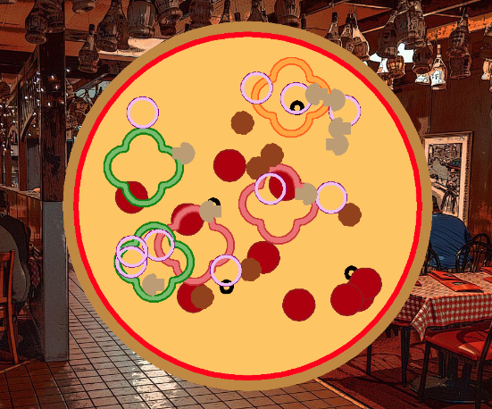
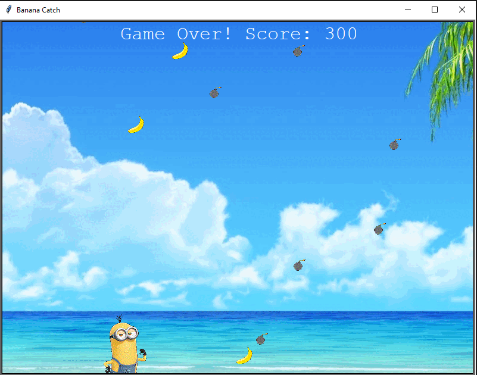
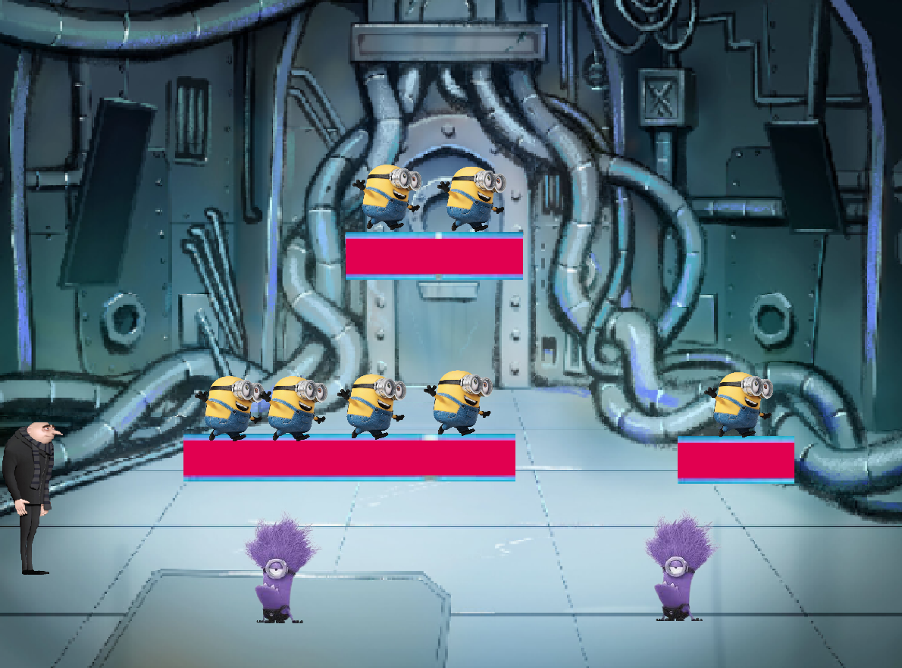

This is my Portfolio Page!
1.1.9: Papa Luigi's Pizzaria
Our game allows you to create a pizza by choosing from the topping options. After choosing how many of the topping you want, it generates on random locations on the pizza base. The pizza has a background of an Italian restaurant and music to create the atmosphere of a pizzaria.
1.2.5: Banana Catch

In this game the player moves across the screen to catch bananas falling from the sky. If you catch a banana, your score increases by 10, but if you catch a bomb, your score decreases by 10 and you lose 1 life. Once all 3 lives are used up, the game ends populating your score on the leaderboard.
Scratch Project: Minion Catcher

In this game Gru runs and jumps on platforms to collect all his minions. You must avoid bumping into the purple minions or your character dies. To win the game you must collect all the minions and squish all the purple minions

AP Performance Task
In this game a Player 1 inputs a word that Player 2 has seven chances to get. This game is a variation on the classic hangman game but instead of a man, you have 7 tries to stop a rare species of fish from being eaten by sharks.
3.2.4 Project - Making Meaning from Data
In this project, we analyzed data from the USDA regarding honey collection in various states. By graphing the data the relationship between disappearing bee colonies in the United States and honey production became apparent. We made the concusion that since 1997, honey production has declined due to dying bee colonies. But in recent years, the increase in number of honey processing centers has kept the honey production stagnaant.